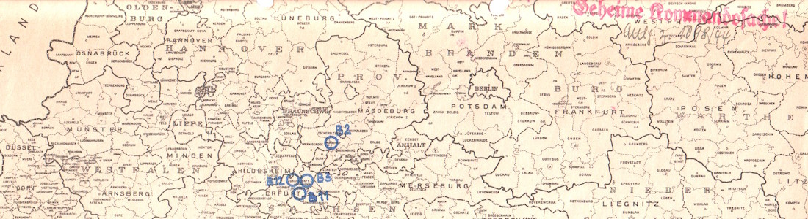

Grubenräume für die Aufnahme von Fertigungsstätten aus luftgefährdeten Gebieten
Oberbergamt Wunderlich
- Title: Grubenräume für die Aufnahme von Fertigungsstätten aus luftgefährdeten Gebieten
- Author: Oberbergamt Wunderlich
- Call Number: R3101/31187, 80497
- Archive: Bundesarchiv Berlin Lichterfelde
- File: Bundesarchiv_R3101-31187.pdf
Last edited on 31 Aug 2016